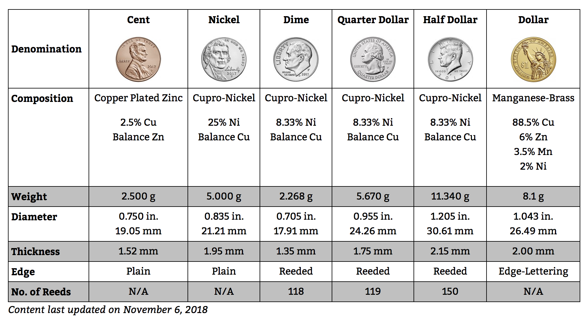
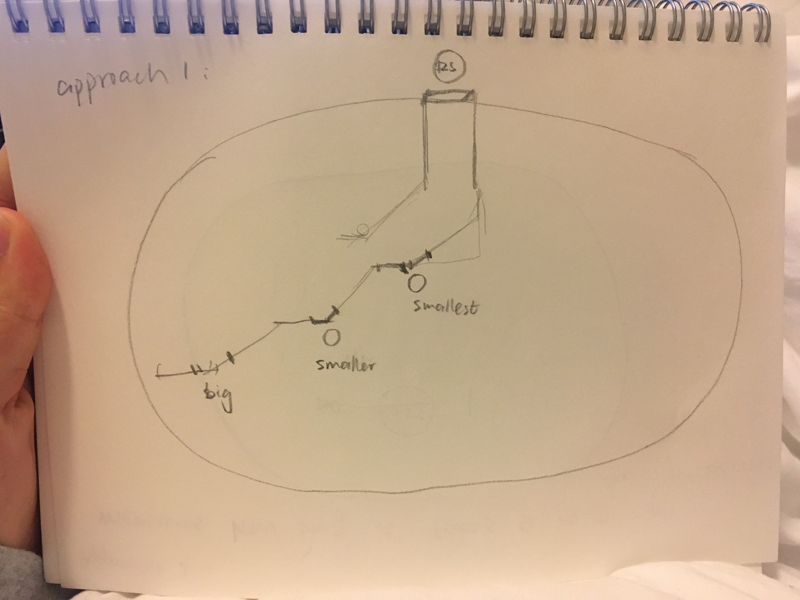
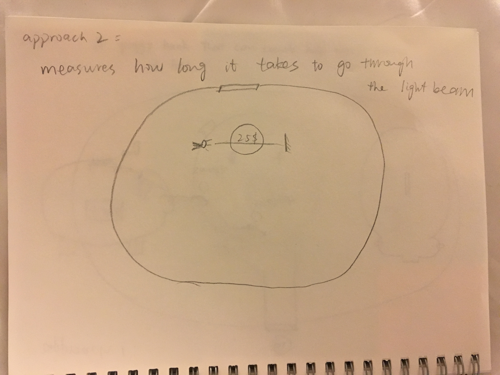

A piggybank that counts coins!


Coin Info

The first approach: make holes of different diameters for different coins, smaller ones go first

The second approach: use light sensor to measure how long the coin cuts the light beam
Backup Approach: Since I am super busy this quarter. If I don't have enough time, I will do a piggybank
with different holes for different coins, which can still count money.